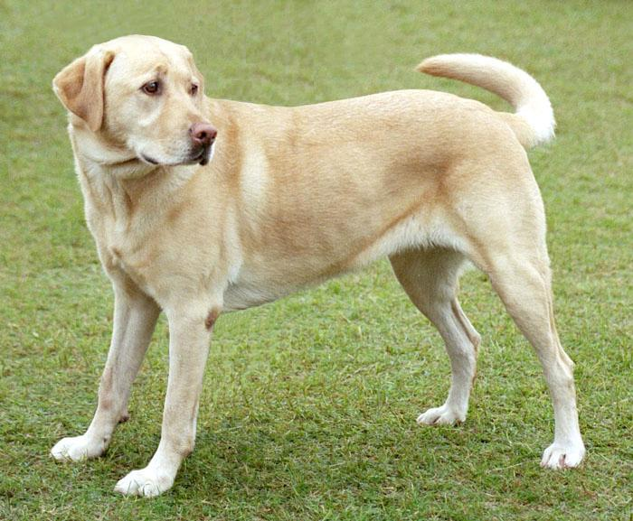

1. Examples¶
1.1. Introduction¶
1.1.1. Biological Neuron and Artificial Neuron¶
Neural networks are a set of algorithms, modeled loosely after the human brain, that are designed to recognize patterns [1]. The perceptron is a mathematical model of a biological neuron.

Fig.1: Biological neuron versus artificial neuron (perceptron).
1.1.2. Learning scheme in Brain and Neural Network¶
Animals, including humans, change their behavior through experience. It is said that the brain has three types of leaning system: supervised learning, reinforcement learning, and unsupervised leaning.
Fig.2: Learning scheme in the brain.
1.2. Supervised Learning¶
Supervised Learning is a machine learning technique that expects a model to learn the input-to-label mapping of data where an input and the label
associated with that input are given.
The objective of supervised learning is to estimate the data generation probability from the experimental probability
:
This is done by minimizing the error between and the output from the model
with parameter
. In practice, the experimental probability
is used for train the model.
1.2.1. Decision Boundary¶
Neural networks can be viewed as a universal approximation function. Let’s use a simple dataset called Spiral to see how neural net can obtain a non-linear decision boundary.
from qualia2.data.basic import Spiral
from qualia2.nn.modules import Module, Linear
from qualia2.functions import tanh, mse_loss
from qualia2.nn.optim import Adadelta
import matplotlib.pyplot as plt
data = Spiral()
data.batch = 100
class MLP(Module):
def __init__(self):
super().__init__()
self.l1 = Linear(2, 15)
self.l2 = Linear(15, 3)
def forward(self, x):
x = tanh(self.l1(x))
x = tanh(self.l2(x))
return x
mlp = MLP()
optim = Adadelta(mlp.params)
# train model
losses=[]
for _ in range(3000):
for feat, label in data:
out = mlp(feat)
loss = mse_loss(out, label)
optim.zero_grad()
loss.backward()
optim.step()
losses.append(loss.asnumpy())
# plot losses
plt.plot(range(len(losses)), losses)
plt.show()
# show decision boundary
data.plot_decision_boundary(mlp)
We can see training loss is gradually decreasing.
Here is the obtained decision boundary:
1.2.2. FashionMNIST with GRU¶
RNNs are often utilized for language model or time series prediction; however, they can also be used for image recongnition tasks. The GRU model takes rows of the image assuming the hidden state of GRU will contain a context of the image. Below is the visualization for the FashionMNIST dataset.
import qualia2
from qualia2.core import *
from qualia2.functions import tanh, softmax_cross_entropy, transpose
from qualia2.nn import Module, GRU, Linear, Adadelta
from qualia2.data import FashionMNIST
from qualia2.util import Trainer
import matplotlib.pyplot as plt
import os
path = os.path.dirname(os.path.abspath(__file__))
def data_trans(data):
data = data.reshape(-1,28,28)
return transpose(data, (1,0,2)).detach()
class GRU_classifier(Module):
def __init__(self):
super().__init__()
self.gru = GRU(28,128,1)
self.linear = Linear(128, 10)
def forward(self, x, h0=qualia2.zeros((1,args.batch,128))):
_, hx = self.gru(x, h0)
out = self.linear(hx[-1])
return out
model = GRU_classifier()
optim = Adadelta(model.params)
mnist = FashionMNIST()
trainer = Trainer(100, path)
trainer.set_data_transformer(data_trans)
trainer.train(model, mnist, optim, softmax_cross_entropy, 100)
Training loss:
[*] test acc: 89.33%
Note
the same model can achieve about 99% test accuracy on MNIST dataset.
1.2.3. Image Classification with AlexNet¶
Qualia provides pretrained computer vision models.
from qualia2.vision import AlexNet, imagenet_labels
import qualia2.vision.transforms as transforms
import PIL
import numpy
img = PIL.Image.open(../assets/dog.jpg)
preprocess = transforms.Compose([
transforms.Resize(256),
transforms.CenterCrop(224),
transforms.ToTensor(),
transforms.Normalize()
])
input = preprocess(img)
model = AlexNet(pretrained=True)
model.eval()
output = model(input).asnumpy()
sorted = output.argsort()[:,-5:][:,::-1]
for i, candidates in enumerate(sorted):
for idx in candidates:
print('{}: {:.2f}%'.format(imagenet_labels[idx], output[i,idx]*100))
Here is the top 5 predictions of the pretrained AlexNet on the given image.

Labrador retriever: 53.45%
Saluki, gazelle hound: 18.93%
golden retriever: 15.33%
borzoi, Russian wolfhound: 2.79%
kuvasz: 1.94%
1.3. Unsupervised Learning¶
Unsupervised learning is a machine learning technique that expects a model to learn patterns in the input data .
Unsupervised learning such as Hebbian learning or self-organization has been heavily utilized by the living creatures. In general, unsupervised system is better than supervised system in finding new patterns or features in the inputs.
In 1949, Donald O. Hebb argued that:
“When an axon of cell A is near enough to excite a cell B and repeatedly or persistently takes part in firing it, some growth process or metabolic change takes place in one or both cells such that A’s efficiency, as one of the cells firing B, is increased.” - Organization of Behavior (1949).
This rule is called Hebbian learning; and this synaptic plasticity is thought to be the basic phenomenon in our learning and memory.
1.3.1. Hebbian learning¶
Hebb’s Rule is often generalized as:
This version of the rule is clearly unstable, as in any network with a dominant signal the synaptic weights will increase or decrease exponentially.
1.3.2. Oja’s learning rule¶
Oja’s rule solves all stability problems of Hebb’s Rule and generates an algorithm for principal components analysis. This is a computational form of an effect which is believed to happen in biological neurons.
1.3.3. Generalized Hebbian Algorithm (Sanger’s rule)¶
This is similar to Oja’s rule in its formulation and stability, except it can be applied to networks with multiple outputs.
1.3.4. Autoencoders¶
Autoencoders learn a given distribution comparing its input to its output. It is useful for learning hidden representations of the data.
To explore the identification of chaotic dynamics evolving on a finite dimensional attractor, let’s consider the nonlinear Lorenz system:
Here is the code for Lorenz system simulation:
from scipy.integrate import odeint
import numpy as np
def lorenz(u, t):
x, y, z = u
sigma = 10.0
beta = 8.0/3.0
rho = 28.0
dxdt = sigma*(y-x)
dydt = x*(rho-z)-y
dzdt = x*y-beta*z
return np.array([dxdt,dydt,dzdt])
dt = 0.01
t = np.arange(0,25, dt)
u0 = np.array([-8.0, 7.0, 27])
u = odeint(lorenz, u0, t)
The trapezoidal rule is a numerical method to solve ordinary differential equations that approximates solutions to initial value problems of the form:
import qualia2
from qualia2 import Tensor
from qualia2.nn import Linear, Module
from qualia2.functions import tanh, mse_loss
from qualia2.nn.optim import Adadelta
from qualia2.core import *
class Model(Module):
def __init__(self):
super().__init__()
self.linear1 = Linear(3, 256)
self.linear2 = Linear(256, 3)
def forward(self, s):
s = tanh(self.linear1(s))
return self.linear2(s)
# train the net with trapezoidal rule
# u_t = u_t1 + 1/2*dt*(f(u_t)+f(u_t1))
def train(model, optim, criteria, u, dt=0.01, epochs=2000):
u_t1 = u[:-1]
u_t = u[1:]
for e in range(epochs):
losses = []
for b in range(len(u)//100):
target = Tensor(2*(u_t[b*100:(b+1)*100] - u_t1[b*100:(b+1)*100]))
output = dt*(model(Tensor(u_t[b*100:(b+1)*100])) + model(Tensor(u_t1[b*100:(b+1)*100])))
loss = criteria(output, target)
optim.zero_grad()
loss.backward()
optim.step()
losses.append(loss.data)
model = Model()
optim = Adadelta(model.params)
train(model, optim, mse_loss, u, dt)
def f(u, t):
return model(qualia2.array(u)).asnumpy()
learned_u = odeint(f, u0, t)
Following is the obtained result:
1.3.5. Generative Adversarial Networks (GANs)¶
GANs utilize networks called Generator and Discriinator. The Discriminator measures the distance between the generated and the real data. The Generator tries to generate the data that Discriminator cannot distinguish from the real data.
Here is the example with MNIST:
import qualia2
from qualia2.core import *
from qualia2.functions import binary_cross_entropy
from qualia2.nn import Sequential, Linear, Sigmoid, Tanh, Adam
from qualia2.data import MNIST
import matplotlib.pyplot as plt
g = Sequential(
Linear(50, 128),
Tanh(),
Linear(128, 256),
Tanh(),
Linear(256, 512),
Tanh(),
Linear(512, 784),
Sigmoid()
)
d = Sequential(
Linear(784, 512),
Tanh(),
Linear(512, 256),
Tanh(),
Linear(256, 128),
Tanh(),
Linear(128, 1),
Sigmoid()
)
def savefig(g, noise, filename):
g.eval()
fake_img = g(noise)
for c in range(10):
for r in range(10):
plt.subplot(10,10,r+c*10+1)
plt.xticks([])
plt.yticks([])
plt.grid(False)
img = fake_img.data[r+c*10].reshape(28,28)
plt.imshow(to_cpu(img) if gpu else img, cmap='gray', interpolation='nearest')
plt.savefig(filename)
# train
batch = 100
epochs = 200
z_dim = 50
smooth = 0.1
optim_g = Adam(g.params, 0.0004, (0.5, 0.999))
optim_d = Adam(d.params, 0.0002, (0.5, 0.999))
criteria = binary_cross_entropy
mnist = MNIST(flatten=True)
mnist.batch = 100
target_real = qualia2.ones((batch, 1))
target_fake = qualia2.zeros((batch,1))
check_noise = qualia2.randn(batch, z_dim)
for epoch in range(epochs):
for i, (data, _) in enumerate(mnist):
d.train()
g.train()
noise = qualia2.randn(batch, z_dim)
fake_img = g(noise)
# update Discriminator
# feed fake images
output_fake = d(fake_img.detach())
loss_d_fake = criteria(output_fake, target_fake)
# feed real images
output_real = d(data)
loss_d_real = criteria(output_real, target_real*(1-smooth))
loss_d = loss_d_fake + loss_d_real
optim_d.zero_grad()
loss_d.backward()
optim_d.step()
# update Generator
d.eval()
output = d(fake_img)
loss_g = criteria(output, target_real)
optim_g.zero_grad()
loss_g.backward()
optim_g.step()
savefig(g, check_noise, path+'/gan_epoch{}.png'.format(epoch))
The obtained result:

1.4. Reinforcement Learning¶
Reinforcement Learning is a machine learning technique that enables an agent to learn in an interactive environment by trial and error using feedback from its own actions and experiences assuming Markov Decision Process (MDP). Reinforcement Learning named after operant conditioning, a method of learning that occurs through rewards and punishments for behavior, presented by B. F. Skinner.
Fig.2: Learning scheme for reinforcement learning assuming MDP.
1.4.1. Markov property¶
A stochastic process has the Markov property if the conditional probability distribution of future states of the process depends only upon the present state. That is, the state and reward
at time t+1 depends on the present state
and the action
.
1.4.2. Value function¶
The state value function under a policy
is the expectation value of the total discounted reward or gain G at given state s.
Similarly, the expectation value of the total discounted reward at given state s and an action a is represented by the action value function .
Among all possible value-functions, there exist an optimal value function that has higher value than other functions for all states.
The optimal policy that corresponds to the optimal value function is:
In a similar manner, the optimal action value function and the corresponding optimal policy are:
1.4.3. Bellman equation¶
From the linearity of , the value function can be expressed as:
If we express the expected reward that we receive when starting in state s, taking action a, and moving into state s’ as:
The value function can be therefore expressed as following. This is the Bellman equation for the state value function under a policy .
The Bellman equation for the action value function can be derived in a similar way.
1.4.4. TD error¶
The Bellman equation requires the knowledge of the transition probability P, which is unknown for most tasks, in order to find the value. This can be resolved by utilizing the experience from trial and error.
The term is called Temporal Difference (TD) error. When the training converges, the TD error is expected to approach to zero.
1.4.5. Dopamine neurons and TD error signal¶

Fig.3: Firing of dopamine neurons and its correspondence with the TD error [1,2].
In the first case, an unpredicted reward (R) occurs, and a burst of dopamine firing follows. In the second case, a predicted reward occurs, and a burst follows the onset of the predictor (CS or conditioned stimulus), but there is no firing after the predicted reward. In the bottom case, a predicted reward is omitted, with a corresponding trough in dopamine responding.
The feature of TD error matches with the response of dopamine neurons in the figure. Therefore, the response of dopamine neurons is thought to be the TD error signal.
1.4.6. CartPole with DQN¶
Q-learning updates the action value according to the following equation:
When the learning converges, the second term of the equation above approaches to zero. Note that when the policy that never takes some of the pairs of state and action, the action value function for the pair will never be learned, and learning will not properly converge.
DQN is Q-Learning with a deep neural network as a Q function approximator. DQN learns to minimize the TD error with some evaluation function .
Generally, the following error is used as the evaluation function.
Qualia2 provides DQN (DQNTrainer) class and Env class for handy testing of DQN. As an example, let’s use CartPole task from Gym. One can visualize the environment with Env.show() method.
A pole is attached by an un-actuated joint to a cart, which moves along a frictionless track. The pendulum starts upright, and the goal is to prevent it from falling over by increasing and reducing the cart’s velocity.
from qualia2.rl.envs import CartPole
from qualia2.rl import ReplayMemory
from qualia2.rl.agents import DQNTrainer, DQN
from qualia2.nn.modules import Module, Linear
from qualia2.functions import tanh
from qualia2.nn.optim import Adadelta
class Model(Module):
def __init__(self):
super().__init__()
self.linear1 = Linear(4, 32)
self.linear2 = Linear(32, 32)
self.linear3 = Linear(32, 2)
def forward(self, x):
x = tanh(self.linear1(x))
x = tanh(self.linear2(x))
x = tanh(self.linear3(x))
return x
env = CartPole()
agent = DQN.init(env, Model())
agent.set_optim(Adadelta)
trainer = DQNTrainer(ReplayMemory,80,10000)
agent = trainer.train(env, agent, episodes=200)
# plot rewards
trainer.plot()
# show learned agent
agent.play(env)
Reward Plot:
The obtained result:
[1] A Beginner’s Guide to Neural Networks and Deep Learning Online: https://skymind.ai/wiki/neural-network
[2] Schultx, W., et al. (1997) Predictive Reward Signal of Dopamine Neurons Science 275: 1593-1599
[3] Doya K. (2007). Reinforcement learning: Computational theory and biological mechanisms. HFSP journal, 1(1), 30–40. doi:10.2976/1.2732246/10.2976/1